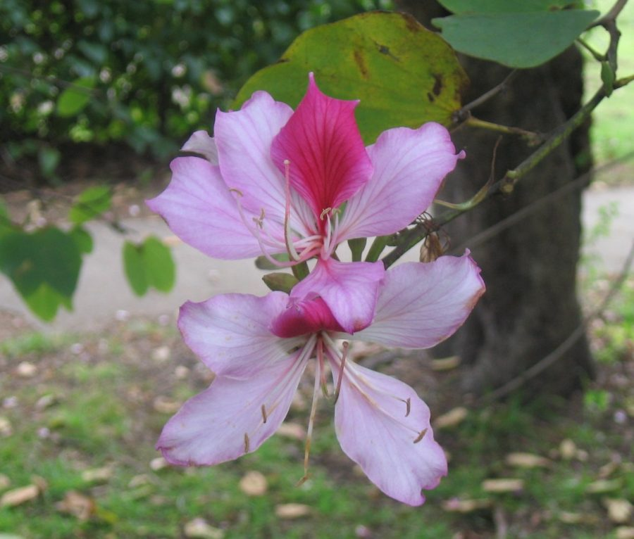

कचनारKachnar
Bauhinia variegata · Fabaceae · FLR-0158

- Scientific name
- Bauhinia variegata L.
- Family
- Fabaceae
- Hindi
- कचनार
- Local names
- kachnar, kachnal, kachnaar, orchid tree, camel foot tree
- Status here
- native
- Movement
- Resident, here all year
- IUCN
- not evaluated
- Review
- audited and independently read
When to look कब देखें
Present all year.
Uses and possibilities उपयोग और संभावनाएँ
“Traditional medicine” means a documented traditional use, not a claim that it works. Nothing on this page is medical advice.
Drawn from the documented uses in the profile below, where each is labelled traditional, current or a research lead. All uses →
Tell it apart from इनसे अलग पहचानें
कचनार / Kachnar
Bauhinia variegata L. — Fabaceae
कचनार — गाँवों के किनारे उगने वाला पेड़, जिसके फूल सुंदर गुलाबी और सफ़ेद होते हैं और दूर से ही दिख जाते हैं। पत्ती अलग ढंग की — दो भागों में बँटी हुई जैसे ऊँट का पैर। नई पत्तियाँ लाल। फल लंबी फलियाँ। कहीं-कहीं खाने के काम आता है।
Quick Identification त्वरित पहचान
| Feature | Description |
|---|---|
| Size | Deciduous tree 5–8 m tall, with a spreading crown |
| Leaves | Simple, bilobed to emarginate, 10–20 cm, shaped like a camel's footprint; new leaves reddish |
| Flowers | Large, showy, pink to magenta with white or purple stripes, five petals, in terminal racemes, January–March |
| Fruit | Long, flat, brown pod (legume), 20–35 cm, with several seeds |
| Bark | Grey-brown, smooth when young |
| The test | The bilobed leaf shape is distinctive and diagnostic |
Field tip: Look in February for a bare tree covered with large pink flowers; the distinctive two-lobed leaves distinguish it instantly. The long brown pod appears in summer.
हिंदी — कैसे पहचानें: गुलाबी, बड़े, सुंदर फूल। पत्ती अलग — दो भागों में बँटी हुई। लंबी भूरी फली। नई पत्तियाँ लाल।
Morphology आकारिकी
Biometrics (cultivated trees, northern Indian plains):
| Measurement | Range |
|---|---|
| Height | 5–8 m |
| Trunk diameter | 20–40 cm |
| Leaf length | 10–20 cm |
| Leaf width | 8–18 cm |
| Flower diameter | 4–6 cm |
| Pod length | 20–35 cm |
Trunk and bark: Straight to crooked, grey-brown, smooth when young, becoming fissured with age. Wood moderately hard.
Leaves: Alternate, simple, cordate at base, bilobed at apex (emarginate), the outline resembling a camel's footprint. Young growth is notably red or copper. Leaves are entire and thin.
Flowers: Large, five-petalled, pale pink to magenta with deeper pink or purple stripes and edges, fragrant, arranged in terminal racemes.
Fruit: A long, flat, woody legume (pod) 20–35 cm long, brown when mature, containing several hard, flat seeds.
हिंदी: पत्ती दो भागों में बँटी, ऊँट का पैर जैसी। फूल गुलाबी, बड़े, सुगंधित। फल लंबी, सपाट फली।
Behaviour & Ecology व्यवहार और पारिस्थितिकी
A tree of deciduous woodlands and wastelands across northern India, the Deccan, and beyond. It is drought-hardy and tolerant of poor soils, growing readily on canal banks and degraded lands. The large, showy flowers appear in the cool season before the leaves flush and are visited by bees. The fruit pods are taken by some birds and germinate readily after rains.
The tree is occasionally lopped for fodder and is used in agroforestry. It regenerates easily from seed.
हिंदी: सूखे और खराब जमीन में भी जीवित रहता है। फूल मधुमक्खियों को आकर्षित करते हैं। फल पक्षियों को खाने में मदद करते हैं।
Life Cycle / Phenology जीवन चक्र
| Month / season | Event |
|---|---|
| October–December | Leaf fall begins |
| January–March | Bare tree; flowers appear before or with new leaves |
| April–May | New leaf flush; flower petals fall |
| June–July | Fruit pods mature and darken |
| 4–5 years from seed | First flowering |
Seeds are hard and benefit from scarification or soaking. Lifespan runs to 40–60 years.
हिंदी: जनवरी-मार्च में फूल, पत्तियों से पहले या साथ में। गर्मी में फल। 4-5 साल में फूल आता है।
Associated Species / Interactions संबंधित प्रजातियाँ
- Pollinators: Wild bees and Asian Honey Bee visit the flowers.
- Larval host: Food plant for various butterfly caterpillars.
- Seed dispersal: Some birds take the pods; wind disperses seeds.
Pests and Diseases कीट और रोग
- Leaf-eating caterpillars and beetles, especially on young trees.
- Scale insects on branches.
- No significant fungal diseases in semi-dry climates.
Agricultural / Human Relevance कृषि प्रासंगिकता
Traditional and Ethnobotanical Use (documented uses; not medical advice):
- Food. The flower buds are eaten as a vegetable in some regions, boiled or curried. The young pods are occasionally eaten.
- Traditional medicine. Flowers and bark are listed in Ayurvedic texts and folk medicine for various complaints. The bark is listed in Kirtikar & Basu as a traditional astringent and for skin conditions.
- Fodder. Leaves and pods are lopped for livestock in times of scarcity.
Today. The tree is grown as an ornamental for its spectacular flowers and as a roadside shade tree. The flower buds are occasionally sold in village markets.
Research direction (a lead, not a result). The nutritional composition of the flower buds and their seasonality in the diet would merit documentation.
हिंदी: फूल की कली सब्ज़ी के रूप में खाई जाती है। छोटी फली भी खाई जाती है। दवा में परंपरागत इस्तेमाल है। पशुओं को पत्ती खिलाई जाती है।
Expected Locally स्थानीय रूप से अपेक्षित
Not a field record. Written from published accounts for eastern Uttar Pradesh. No confirmed local sighting yet — if you have seen it, that is what the atlas needs.
अभी तक स्थानीय पुष्टि नहीं। यह विवरण प्रकाशित स्रोतों से है, किसी अवलोकन से नहीं।
To be expected as scattered planted trees in villages, along canal banks, and on wastelands across Basti district. The bright flowers in winter make any tree conspicuous.
Distribution वितरण
Global range: Native to the Himalayan foothills and the Indian peninsula; widely cultivated as an ornamental.
In India: Widespread in deciduous forests and cultivated settings throughout the plains and plateaus.
In Uttar Pradesh: Common in village areas and along roadsides.
In Basti district / eastern UP: Scattered planted trees; may occur wild on wastelands.
Research Questions शोध प्रश्न
Anyone can investigate these | कोई भी इन प्रश्नों की जाँच कर सकता है
- Which insects visit the pink flowers, and when during the day are they most active? — Observe a flowering tree for 30 minutes at dawn, noon, and dusk.
- Who in your village still eats the flower buds, and in what season? / क्या कोई अब भी कचनार की कली खाता है? — Ask elders about food uses.
- How many trees are in your village, and do they all flower at the same time? — Walk and map all trees; note flowering dates.
- Do birds eat the long brown pods, or do they fall and rot? — Watch a fruiting tree in May–June.
- What insects lay eggs on the leaves in the monsoon, and what do the caterpillars look like? — Inspect leaf undersides in July–August.
Similar Species मिलती-जुलती प्रजातियाँ
| Species | How to tell apart | हिंदी |
|---|---|---|
| Bauhinia purpurea (purple bauhinia) | Flowers deep magenta or purple; leaves sometimes less deeply lobed; less common | गहरे बैंगनी फूल |
| False Ashoka (Monoon longifolium) | Leaves simple and long, not bilobed; flowers yellow; fruit berries | सरल पत्तियाँ, पीले फूल |
| Sesbania (Sesbania sesban) | Herb or small shrub; leaflets small and numerous; flowers yellow | छोटा, पत्तियाँ कई |
Field rule: A tree with bilobed, camel-footprint-shaped leaves and large pink striped flowers in winter, is kachnar.
Taxonomy & Classification वर्गीकरण
Original description. Described by Linnaeus in 1753 in Species Plantarum. The genus name Bauhinia honours the Bauhin brothers, botanists of the 16th century. The epithet variegata refers to the variegated (striped) petals.
Subspecies. Monotypic — no subspecies are currently recognised.
Family and order placement. Fabaceae, the legume family, in the order Fabales. The genus Bauhinia holds about 300 species in tropical and subtropical regions.
Phylogenetic notes. Bauhinia variegata is one of the most widely cultivated species in the genus.
IUCN status rationale. Not evaluated. Widespread in cultivation and wild settings.
Photo Gallery फोटो गैलरी
Photos needed आवश्यक फोटो
- [ ] Whole tree in February flower (पूरा पेड़)
- [ ] Pink striped flowers in detail (फूल)
- [ ] Bilobed leaf (पत्ती)
- [ ] Brown fruit pod (फली)
No photos yet — add field photos to media/species/kachnar/ and run node scripts/sync_photos.js.
References संदर्भ
- Linnaeus, C. (1753). Species Plantarum, vol. 2, p. 374. Laurentii Salvii, Holmiae. [original description]
- Hooker, J.D. (1879). The Flora of British India, vol. 2. L. Reeve, London. (Bauhinia)
- Kirtikar, K.R. & Basu, B.D. (1935). Indian Medicinal Plants, 2nd ed., vol. 1. Lalit Mohan Basu, Allahabad.
- Duthie, J.F. (1903). Flora of the Upper Gangetic Plain. Government Printing, Calcutta.
- Singh, P. & Paw, K. (1990). Ethnobotany of Bauhinia species in India. Journal of Ethnobotany 2(1): 23–31.
- GBIF Occurrence Data — Bauhinia variegata, India (2026).
Source file: species/flora/trees/kachnar.md